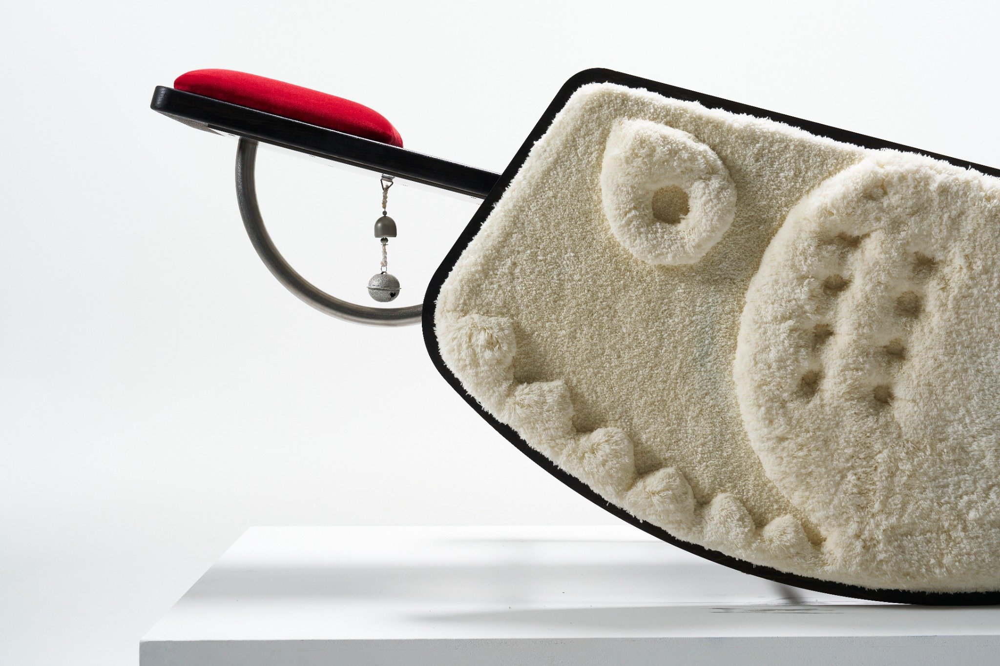

01Sulwhasoo Project
Atlanta · Seoul
Selected work
Project index
2025—2026
About

Currently pursuing a BS in Industrial Design with a minor in Sustainable Business at Georgia Tech after two years at Rhode Island School of Design. Areas of practice include product development, physical fabrication, interaction design, and research.
BS Industrial Design · Minor in Sustainable Business
BFA Industrial Design
Lab Mentor · Georgia Tech
Designer · Seoul, South Korea
Product Design Intern · Seoul, South Korea
Teaching Assistant · Providence, Rhode Island
Intern · Seoul, South Korea
Contact
LocationAtlanta, GA · Seoul, South Korea
Overview
Process
Replace this paragraph with research findings, key decisions, prototypes, and what changed as the project developed.